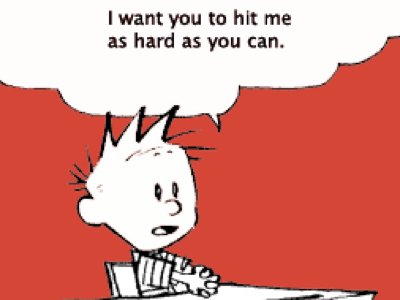

Calvin and the New Librarian: Musings on the importance of Google Book Search
This excerpt, written for Information Structures (IS 260) is the only section that does not deal directly with moving image archives. I included it here because it is an example of the type of user-centric thinking that I believe is currently lacking in the moving image archiving community. It speaks to the movement towards digitization in all aspects of culture, and why all archivists should consequently pay attention to this movement.
The assignment for this final paper was to assess the validity of, and argue for or against, one statement from a list. The statement I chose to respond to was “Does Google Book Search change everything?”
Google is far from the only entity that is embarking on mass book digitization, but its status as the most commercially and publicly visible entity brings it to the forefront of the debates about changing library strategies. In the broader world of library and information sciences, Google Book Search is paradigmatically representative of a movement towards the digitization of content, its full text searchable by keyword or user-created tags and metadata. Debates over the implications of this movement for librarians have invoked several important questions. Does Google Book Search change “everything”? To determine this, it is necessary to define the notion of “everything” as it pertains to this issue. “Everything” includes:
-
๏The role of ontological concepts as a broader philosophical means of organizing the world’s library holdings
-
๏The future of controlled vocabularies and subject classification, both in a broad philosophical sense and as a pragmatic priority for librarians and cataloguers
-
๏The usefulness and level of priority given to keeping quantities of physical book holdings in libraries
-
๏The role of librarians and their relationships to users
-
๏The research priorities of users
-
๏The form and focus of the world’s scholarly and professional output as a whole.
In light of this definition, Google Book Search is in the process of changing “everything,” as evidenced by changing priorities at the Library of Congress and the growth and popularity of open source content and websites that allow and encourage it. That being said, these consequences are only symptomatic of the evolving needs of the public. The changes being put in place at the Library of Congress and the resulting debates about their implications for librarians are well-documented, and more symptomatic than diagnostic. The most diagnostic factor in assessing the level to which Google Book Search affects the global sphere of information search and retrieval is the changing face of the user.
As the American Council of Learned Societies stated in a recent web module, “It is not just the collection of data—digital or otherwise—that matters: at least as important is the activity that goes on around it, contributes to it, and eventually integrates with it.” [1] The exponential growth of a new generation of users who not only prefer, but nearly exclusively use keyword and user-based searches in their research is the most significant rationale for librarians to follow Google’s lead in the valuation of open digital content. They are the impetus for the entire open content movement, and the model on which librarians should base not only their current priorities, but their future purpose and function.
LOC changes – turn and face the strain
[Discussion of changes at the Library of Congress, arguments of Thomas Mann]
Meet Calvin, “the new user”
In his papers devoted to the future of cataloguing, Thomas Mann spends ample time critically developing the miscreant form of a student who prefers web research, who “has a term paper due quickly, who does not want to leave her cozy dorm room and trudge all the way to the library, who does not have time to read entire books in any event, who wants only English language material, and who cannot be bothered with anything that does not come up immediately in a Google search.” [2] Although spiteful in its tone, Mann’s reaction was fueled by Marcum’s ostentatious development of a character she called “Calvin” at a speech given in 2006 in Michigan, where she states,
-
Hobbes looked at Calvin, and they both nodded–yes, there’s an easier way. Go to the Web, get the Google search box, type in a keyword, and get back not catalog information, and not advice, but information itself–the stuff you really need to write a term paper. On the Web he could do that without having to go to the library or anywhere else outside his dorm room, except that candy-bar machine. Calvin really liked that. [3]
This Calvin, although somewhat maliciously aligned in statements like the one above, is nevertheless a formidable character that will more and more become the model for the type of user that will be in need of the information that it is a librarian’s purpose to make accessible. He is based on the average undergraduate user, who, while seemingly undervalued by librarians like Mann, is the pool from which future graduate students will be pulled. By extension, future PhD candidates and university professors, doctors, scholars and all other professional-level users of information content will be pulled from this group as well. So for the purposes of discussions about the importance of the user, it does not necessarily behoove Mann to discredit the undergraduate student.
So how, or more importantly, how well, do these “new’ undergraduates conduct research? To a large extent, a student’s work is only as good as the information to which they have access. The level of access to information, the depth of that information and its originality in comparison to other students’ work are affected by the process by which research is conducted. It is directly correlated not only to the amount of work that a student puts into the process but the variety of that work.
The different levels of research work that a student puts into a given paper, presentation, or project can be considered “currency” to a large extent, with these different levels representing the amount of currency they are willing to invest in their project. Each time a student has to leave the comfort of their dorm or apartment and physically travel the library could represent a set amount of currency. Each time that student has to fill out a special form at the library to request items that are kept behind a desk is another set, having to use equipment like microfiche readers is another, the wait for interlibrary loans and transfers is yet another. In one survey of college student’s research methods by Karl Fast and D. Grant Campbell, they described a subset of these levels of “currency”, just within the constraints of using an OPAC interface: “The OPAC … suggests delay while manipulating the complicated features such as controlled vocabularies, or authorized headings; delay while acquiring the necessary skill set to use these features more efficiently; and the delay inherent in moving from the surrogates to the documents themselves.” [4]
The ideal, most well-rounded student, who is engaged with their subject and wants a breadth of sources and materials, will “invest” well in their research, employing a combination of all of the above levels of “currency,” plus a healthy dose of internet searching. But it is arguable that most students (and even professional researchers) would ideally like to be able to achieve this source breadth with the most minimal investment, i.e. the “cheapest” way possible. This means, essentially, using internet resources almost exclusively.
Survey Says … Google
[Discussion of surveys of college users, the results of a personal survey of a group of undergraduate students from my ENG 4W class]
Conclusion
The central fear that writers like Mann seem to evoke is one of decentralization – the onset of the digital library and efforts like Google Book Search invoke not only pragmatic questions about the librarian’s essential daily duties, but their very usefulness, integrity and the relevance of advanced education and experience. Mann even acknowledges this fear in a moment of lucid self-awareness; “Professional librarians who raise objections to the abandonment of cataloging and classification [are] dismissed as dinosaurs whose ‘resistance to change’ springs not from their concern for the maintenance of high professional standards, but from a selfish fear of losing job security.” [5] But professional standards don’t need to be abandoned completely as much as they need to, have to be modified to adapt to changing needs and technologies. As long-time cataloguer James Weinheimer states, “If libraries are to play an important role in the World Wide Web, which I believe they should, it will be through their catalogs and the methods they choose to merge their catalog records with the wider world of metadata.” [6] Not only should librarians find ways to merge traditional cataloguing standards with newer keyword and user-based search metadata, but they should advance their training in digital technologies and continue their efforts towards digitizing their own, unique subset of book holdings. In addition to the Library of Congress’s obvious move in this direction, small, progressive libraries are showing signs of this evolution by listing their holdings on LibraryThing or linking up with the Open Content Alliance to point users to digitized texts, as in the case outlined on the Prelinger Library’s blog:
-
Today is a bit of a milestone. A visitor pulled Finding the Worth While in California (1916) off the shelf and asked if she could scan a page from it to take with her to use in a project. Rick recognized from the bookmark that it had been scanned through the Internet Archive. He downloaded a PDF of the entire book for the visitor and put it on her flash drive. Thus our library became a functioning digital as well as analog book resource. [7]
This is the librarian of the future, who seeks to understand the user’s needs, who values wide access to information, and who acts as a facilitator for digital content. Let the Calvins of the world take comfort in this idea and look forward to the day when the boundaries between the dorm room and the reading room are blurred, but there is space for both.

1. American Council of Learned Societies, Commission on Cyberinfrastructure for the Humanities & Social Sciences, “A Grand Challenge for the Humanities and Social Sciences,” http://cnx.org/content/m14141/latest/.
2. Thomas Mann, “Will Google’s Keyword Searching Eliminate the Need for LC Cataloging and Classification?,” AFSCME 2910, http://www.guild2910.org/searching.htm (accessed February 23, 2007).
3. Quoted in Thomas Mann, “What is Going on at the Library of Congress?”, 7.
4. Karl V. Fast and D. Grant Campbell, “’I Still Prefer Google’: University Student Perceptions of Searching OPACS and the Web,” presentation to the ASIST 2004 Annual Meeting, http://www.asis.org/Conferences/AMO4/abstracts/137.html (accessed March 8, 2007), 144.
4. Thomas Mann, “Will Google’s Keyword Searching Eliminate the Need for LC Cataloging and Classification?”
5. James Weinheimer, “An Open Reply to ‘What is Going on at the Library of Congress?’ by Thomas Mann,” E-Prints in Library and Information Science, http://eprints.rclis.org/archive/00006741/01/Response_to_Thomas_Mann.pdf (accessed February 23,2007).
6. Megan Prelinger, comment on “First Digital Book Distributed,” The Prelinger Library Blog, comment posted December 6, 2006, http://prelingerlibrary.blogspot.com/2006/12/first-digital-book-distributed.html (accessed March 12, 2006).

Paper Excerpts
Thursday, March 15, 2007
